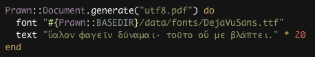
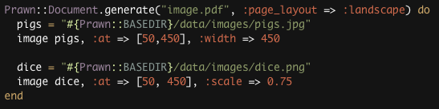
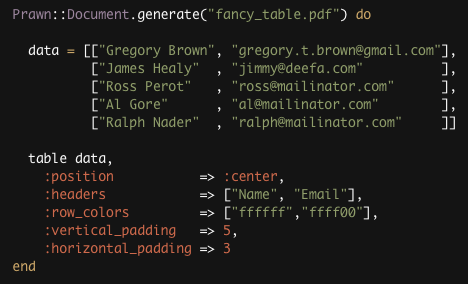
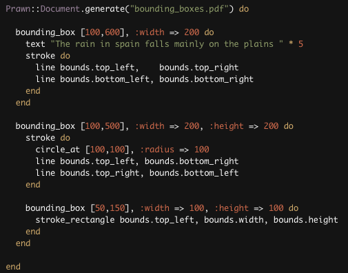

Prawn: 小巧的Ruby PDF生成库
从RubyGems安装 : gem install prawn轻而易举创建PDF打印文档
在包括Ruby在内的几乎所有编程语言中，将文档转换成PDF格式一直是一件令人头痛的事情。Prawn可以帮你大大减轻这种痛苦，并且仍然保持高效简洁。Prawn, 中文意为虾，也暗含了小巧迅速的意味。
方便地获取所需功能
Prawn是 速度最快，功能最纯粹的基于Ruby的PDF生成类库。, 在接下来的内容中，你会看到Prawn的一些具体代码， 点击代码本身可以看到代码所产生的PDF文档。
-- 内置支持ＵTF-8
在Prawn中生成国际化文字和生成UTF-8字符串一样简单,当然前提条件是你有国际化文字的标准字体文件(Unicode aware TTF font)在你的系统中。使用Ruby 1.9的人，所有可以被转化成UTF-8的代码都可以直接使用。
-- 轻松的图像嵌入
在Prawn中插入JPEG和PNG格式的图像相当方便。Prawn支持Alpha透明，定位和缩放都可以很容易实现，从而使在文档中插入图像轻而易举。
-- 灵活的表格绘制
Prawn内置支持以表格的形式呈现文字，从而实现基本的报表功能。将用户从编写低端画图代码中解脱出来，而能够真正将精力用在编辑文档的内容上。。
-- 简化的定位系统
写过低端绘图软件的人一定记得处理好各种坐标系不是一件容易的事情。Prawn将这个过程大大简化。你可以将文档的任何一个部分界成一个独特的区域(bounding box)，并拥有这个区域独立的坐标系。你可以在文档中随意移动这个区域的位置，但是这个区域内部组分的相对位置不会改变，从而保持了代码的简洁。在这样的特定区域内，文字也可以自动分行，所以在海报上分栏书写变得非常容易。
-- 更多功能即将实现
Prawn现在只处于开发的初级阶段， 新的功能每天都会出现。在不久的将来我们会将它整合到现有的 Ruby报表软件系统(Ruport)。 如果你希望知道最新的功能，只需点击 例子和代码， 它包含上面显示的各种代码和更多其它有关的内容。来自Ruby社区的支持
Prawn的开发很大一部分是基于社区对Gregory Brown的 ”Ruby之乞“ 计划的捐赠。在人们的支持下，此计划一经产生就迅速成长了起来，并成了现实。
自从2008年四月Prawn开始之始，包括在代码的表达，错误的监察，以及功能的制定等各个方面都有Ruby爱好者们的积极地参与。你们可以从 Github network graph上找到他们的足迹。在为Prawn提供了插件的所有人中，特别感谢 James Healy 和 Michael Daines 为他们对Prawn的不可取代的贡献。
如果你希望能够在Rails的程序中用到Prawn,你可以试试使用另一个社区产品，thorny_sun的 Prawnto Rails的插件。虽然这个并不是Prawn的正式部件，我们会尽力使这个插件保持发挥作用。
请加入我们开发Prawn的队伍，使它真正成为符合客户选择的生成PDF的Ruby类库。 你可以加入我们的 邮件组 或者加入我们在irc.freenode.net上 #prawn 频道的聊天组。需要做的事情还很多，你的帮助会使我们离目标更近一步！
快来一试！
从RubyGems安装: gem install prawn 从github下载: 地址为: git://github.com/sandal/prawn.git